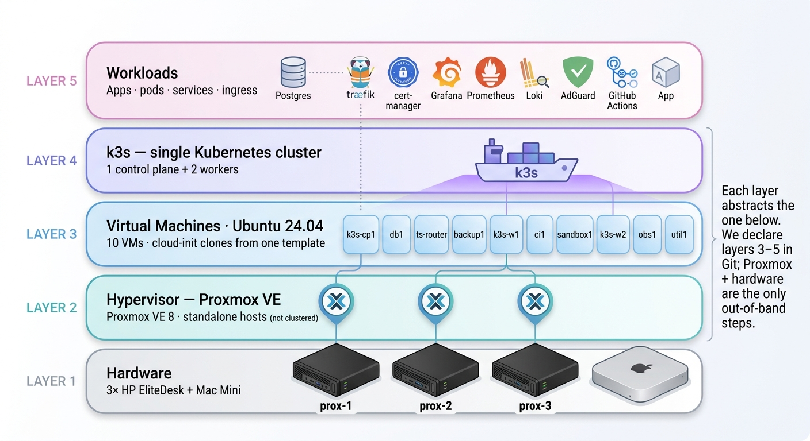
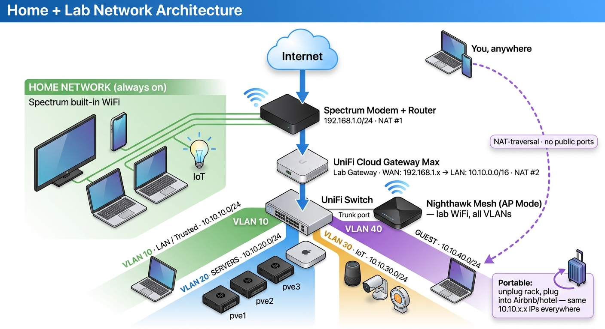
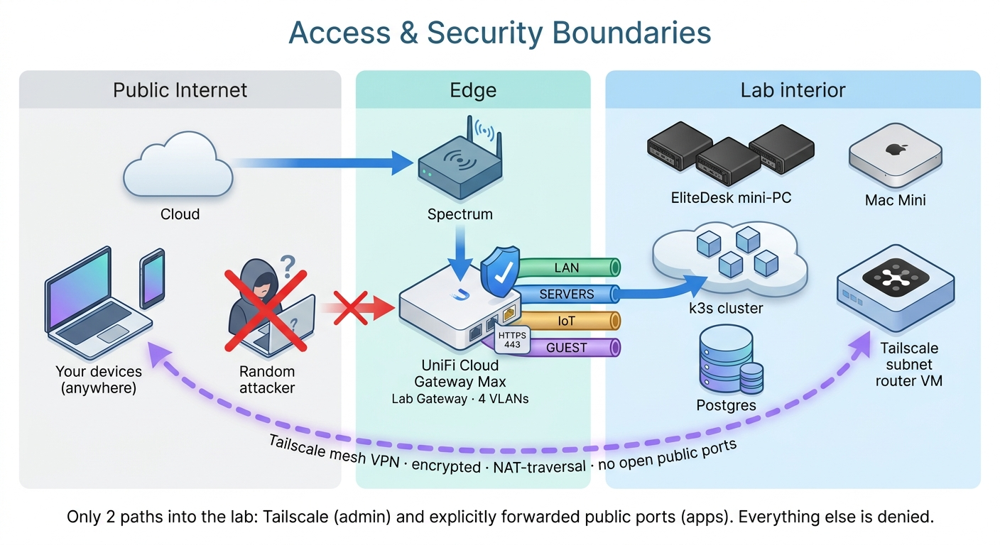

A small but production-shaped homelab on four mini PCs. Three HP EliteDesks run Proxmox VE; on them sit ten Ubuntu VMs that together form a k3s Kubernetes cluster (one control plane, two workers) plus single-purpose VMs for Postgres, ingress, observability, CI, and backups. A Mac Mini sits beside the cluster as a standalone AI / build node. Remote access is exclusively via Tailscale; the lab keeps the same 10.10.20.x IP plan whether it's at home or plugged into Airbnb Wi-Fi on the road.
Everything above the hardware layer is declarative and lives in codephilip/homelab on GitHub. Rebuilding the entire stack from scratch is a handful of commands documented in the Runbook.
terraform/locals.tf) for the IP / sizing plan. Standalone Proxmox hosts; clustering happens at the workload layer (k3s), not the hypervisor. No public ports except the few apps that need them.
| Layer | What it is | Where it lives |
|---|---|---|
| 1 · Hardware | 3× HP EliteDesk + Mac Mini + UniFi gear | Physical rack |
| 2 · Hypervisor | Proxmox VE 8, three standalone hosts | Manual install once; bootstrap scripts in repo |
| 3 · Virtual machines | 10 Ubuntu 24.04 VMs cloned from one cloud-init template | terraform/ |
| 4 · Cluster | k3s — 1 control plane + 2 worker VMs forming one cluster | ansible/k3s.yml |
| 5 · Workloads | Apps, ingress, cert-manager, observability, etc. | deploy/ + remaining playbooks |

Subnet: 192.168.1.0/24
Router: Spectrum modem+router (not replaced)
WiFi: the Spectrum router's built-in WiFi
For: family devices, TVs, IoT
Why separate: if the lab is down, family WiFi keeps working. We never touch this network.
Subnet: 10.10.0.0/16 split into VLANs
Router: UniFi Cloud Gateway Max (WAN to Spectrum)
Switch: UniFi Managed Switch (VLAN-aware)
WiFi: Nighthawk Mesh in AP mode, trunk-attached to switch
For: all lab compute. Isolated, portable, fully under our control.
This is double-NAT (Spectrum + UniFi). We accept that cost in exchange for (a) family/lab isolation, (b) total portability — pack the whole rack into a suitcase, plug into any upstream, same IPs and apps come up — and (c) zero dependence on Spectrum router config.
| VLAN | Name | Subnet | Purpose |
|---|---|---|---|
| 10 | LAN (Trusted) | 10.10.10.0/24 (varies in practice) | Personal laptops, phones |
| 20 | SERVERS | 10.10.20.0/24 | Proxmox hosts + 10 lab VMs |
| 30 | IoT | 10.10.30.0/24 | Lab-side IoT, isolated from servers |
| 40 | GUEST | 10.10.40.0/24 | Visitors — internet only |
| 60 | AI | 10.10.60.0/24 | Mac Mini lives here (Ollama, builds, AI workloads) |
Single, memorable pattern: hosts at .10N; VMs on host prox-N are in .1N0–.1N9.
| Device | Hostname | IP |
|---|---|---|
| UniFi Gateway | — | 10.10.20.1 |
| EliteDesk #1 (Proxmox) | prox-1 | 10.10.20.101 |
| EliteDesk #2 (Proxmox) | prox-2 | 10.10.20.102 |
| EliteDesk #3 (Proxmox) | prox-3 | 10.10.20.103 |
| k3s control plane (on prox-1) | k3s-cp1 | 10.10.20.110 |
| Postgres (on prox-1) | db1 | 10.10.20.111 |
| Tailscale subnet router (on prox-1) | ts-router | 10.10.20.112 |
| Backup VM (on prox-1) | backup1 | 10.10.20.113 |
| k3s worker (on prox-2) | k3s-w1 | 10.10.20.120 |
| CI runner (on prox-2) | ci1 | 10.10.20.121 |
| Sandbox (on prox-2) | sandbox1 | 10.10.20.122 |
| k3s worker (on prox-3) | k3s-w2 | 10.10.20.130 |
| Observability (on prox-3) | obs1 | 10.10.20.131 |
| Utility / AdGuard (on prox-3) | util1 | 10.10.20.132 |
Mac Mini lives at 10.10.60.50 (DHCP on VLAN 60, AI domain).

A single VM (ts-router) advertises 10.10.20.0/24 into our tailnet. Personal devices (laptop, phone, Mac Mini) join the same tailnet. Result: from anywhere in the world, ssh ubuntu@10.10.20.110 just works — and we never opened a public SSH port to do it. Tailscale uses NAT-traversal and end-to-end encryption (WireGuard), so even the double-NAT topology is invisible to the user.
Only services that explicitly need to be on the public internet are forwarded — typically just ports 80/443 from the UniFi gateway to k3s-w1 (which hosts Traefik). Everything else (Proxmox UIs, Grafana, AdGuard admin, etc.) is reachable only via Tailscale.
cert-manager + Let's Encrypt issue real certs for any public host via the letsencrypt ClusterIssuer (and letsencrypt-staging for testing). Apps opt in with an annotation on their Ingress. Internal-only services skip TLS or use self-signed.
~/homelab/.envrc on the operator's Mac — never committed (gitignored)postgres-app in prod namespace) which apps mount as env vars| Decision | Why |
|---|---|
| Three standalone Proxmox hosts, no Proxmox cluster | Clustering happens at k3s where workloads actually need it. Proxmox HA adds quorum / corosync / shared-storage assumptions we don't need. |
| k3s, not full Kubernetes | Single binary, runs in <512 MB RAM, perfect for small clusters. Same API as upstream k8s. |
| Single k3s control plane (no HA) | Two more control plane VMs to gain ~5 min/year of resilience isn't worth the complexity for a homelab. |
| Postgres outside k3s on its own VM | Database state shouldn't be subject to cluster lifecycle. Easier to back up, easier to reason about. |
| Observability outside k3s (Docker Compose on obs1) | When the cluster catches fire is exactly when you most need graphs. Decoupling it ensures monitoring survives the thing it's monitoring. |
| Tailscale for everything internal-but-remote | Free, NAT-traversing, no public ports needed, works identically from coffee shop / phone / home. |
| One Ubuntu cloud-init template, cloned 10× via Terraform | Adding the 11th VM is one entry in locals.tf + terraform apply. Goldenmaster, no snowflakes. |
| Self-hosted GitHub Actions runner | Zero billed CI minutes. Runner sits inside the LAN with access to k3s + Postgres — capabilities GitHub-hosted runners would never have. |
| Restic for backups + B2 for off-site | Deduplicated, encrypted, append-only. Off-site protects against house-level disasters. |
| UniFi as lab gateway, Spectrum untouched | Family network keeps working when we break things. Lab is portable to any upstream. |
| Inside k3s | Outside k3s (own VM or host) |
|---|---|
| Application workloads (your apps) | PostgreSQL (db1) |
| Traefik (ingress controller) | Grafana + Prometheus + Loki (obs1) |
| cert-manager (TLS automation) | Self-hosted GitHub Actions runner (ci1) |
k8s Secrets (postgres-app, certs) | AdGuard Home DNS (util1) |
k8s Services (including ExternalName for Postgres) | Tailscale subnet router (ts-router) |
| restic + cron backup orchestration (backup1) | |
| Ollama + AI workloads (Mac Mini) |
github.com/codephilip/homelabterraform/locals.tf